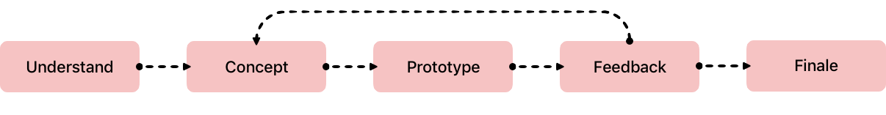
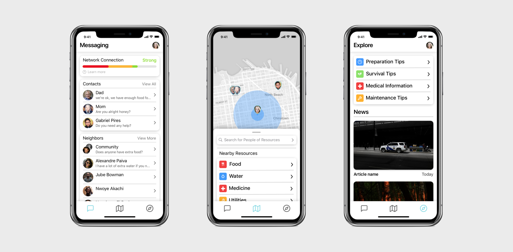
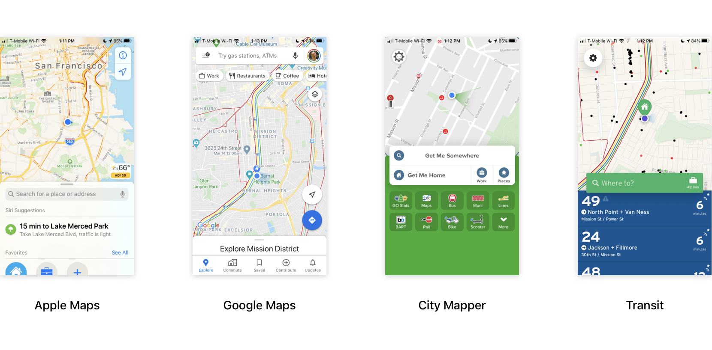
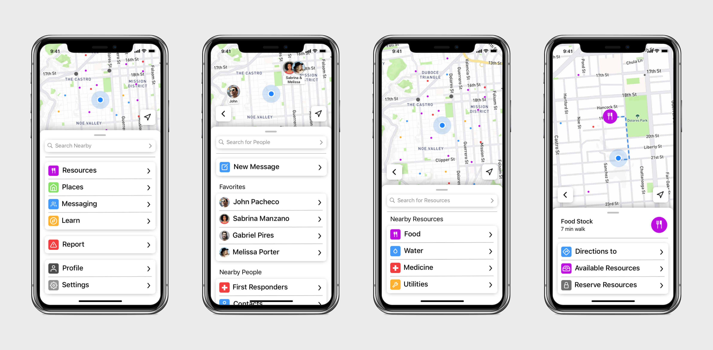
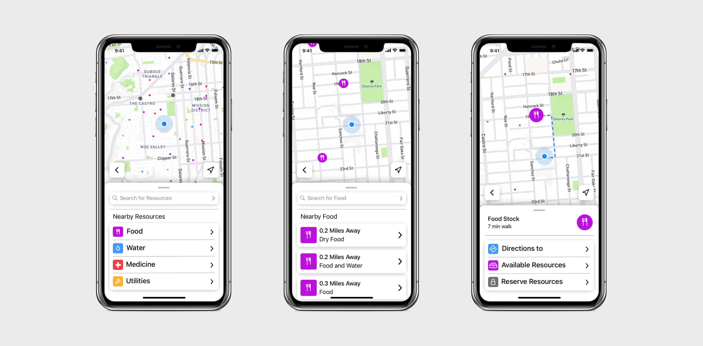
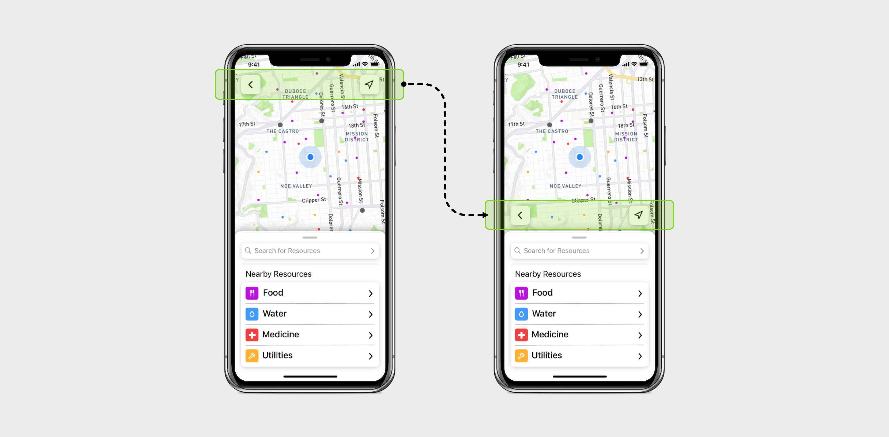
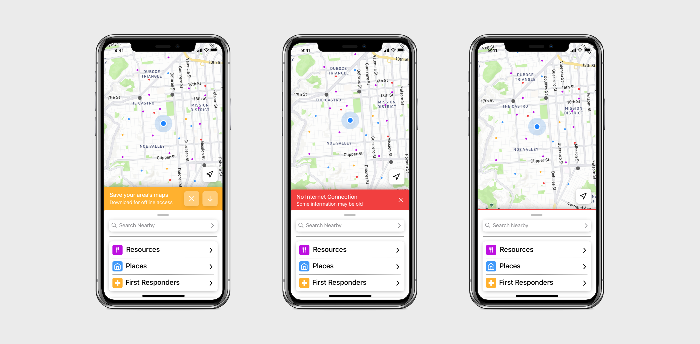

Uniquick is an application that, in the event of a natural disaster, would help organize relief efforts and deal with resource management. The application show users where the nearest resources, such as food and water, were located.
Approach

I'm taking an approach that is very iterative. I make an initial concept and then, by looking into its issues and receiving feedback, I modify and improve it until I have a final solution.
Version 1

This was the first design I thought of for Uniquick. It resembled a more traditional style of an application with a tab bar at the bottom and three different screens for the three "main" sections: Messaging, Map, and Explore.
Design Issues
The main issue with this design is that it put too much emphasis on messaging and explore when the application should be centered around the map to help focus users to find resources quickly.
Inspiration

Since I wanted the Uniquick app to be centered around the map, I decided to look at existing map applications. What stood out to me was that all of these apps had a sheet at the bottom of the screen that can be swiped up to reveal more information relevant to the user's location.
Version 2

This is the second iteration for the application. I kept the basic page that was used for the map and got rid of the messaging and explore page. Those pages were replaced by "Learn" and "Messaging" that could be accessed by the main sheet at the bottom of the app.
User Feedback
I showed this version to some of my friends and family and most of the feedback I got was that they didn't see why the messaging or explore pages were very useful. When I took a step back and looked at the functionality of the app I realized that, in some ways, having these features made the app more confusing to use. They weren't important enough to justify and, in a stressful scenario, I didn't want the users to be distracted by anything.
Final Version
For this final version, I didn't make any drastic changes to the overall design. I removed Messaging and Explore and replaced them with only a way to contact first responders. If people wanted to contact their loved ones, they would just use a messaging app they already had installed.
Since the main objective of the app was to make it easy for users to find resources, the main page displays all the nearby resources as little dots that correspond to locations where you can find them. There are slightly larger grey dot that represent "Drop Points" which are main locations where most of the resources can be found. When you zoom in, the dots get bigger and display the icon of the corresponding resource.
Managing Resources

Users navigated through app by using the sheets displayed at the bottom. You can easily go back to the previous sheet with the back button. You can find resources using the sections in the sheets, on the map, or by search for it. The app will then display the basic information about the resource and and its location while giving you directions on how to get there. In addition to collecting resources for themselves, users can decide to set up their own drop points and locations to help spread out the resources from the main drop points and make it easier for people who are further away to access.
Modification

I had originally placed the location and back buttons at the top of the application but when I thought about the usability of the location, it didn't work at all. The back button, which would be used often by users was in an extremely difficult place to reach one handed. In order to improve to usability, I moved both the back and location buttons to right above the sheet so that they could be accessed easily.
In-App Alerts

Any alerts would be displayed directly above the main sheet. The two examples above show an alert to download the current area's map so that the user can view resources neary even when offline and the second alert is for when the user is offline. For permanent alerts, like no internet connection, it is still displayed even when dismissed by a colored line above sheet. I figured that these alerts were important because, in the event of a natural disaster, users might not be able to get any network connection.